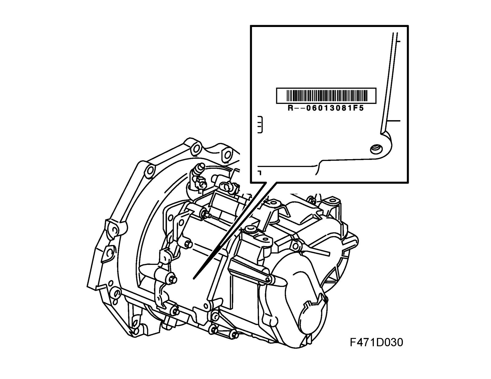
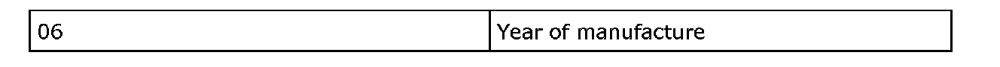
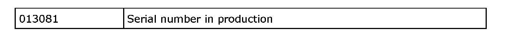
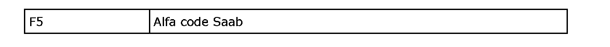

Manual Transmission/Transaxle: Application and ID
Type designation
General
The type designation for manual gearboxes is divided into 4 groups of characters as in the following example:
F40 6 WR 335
The three character groups are separated by spaces and contain different information about the gearbox as specified below.
First group:
Second group:

Third group:

Fourth group:
